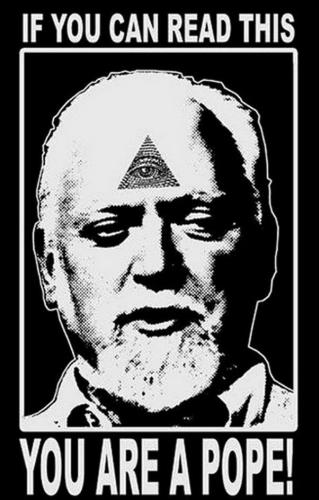
×
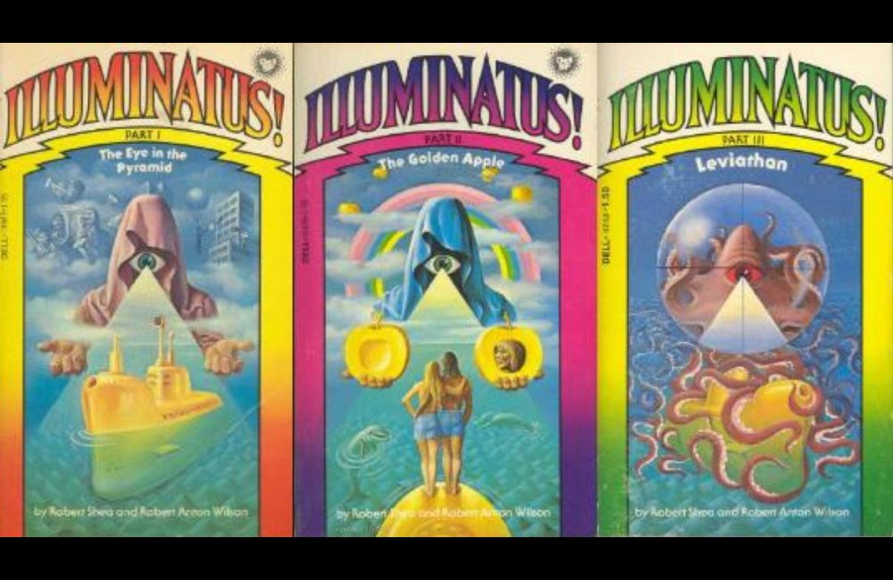
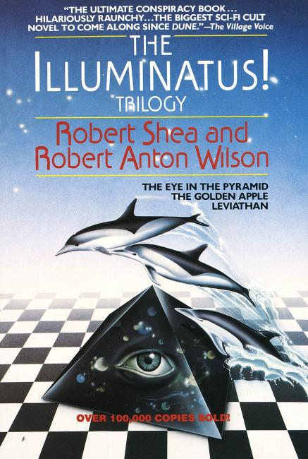
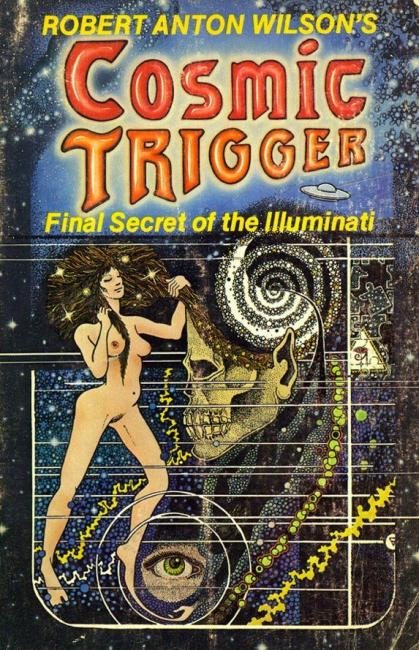
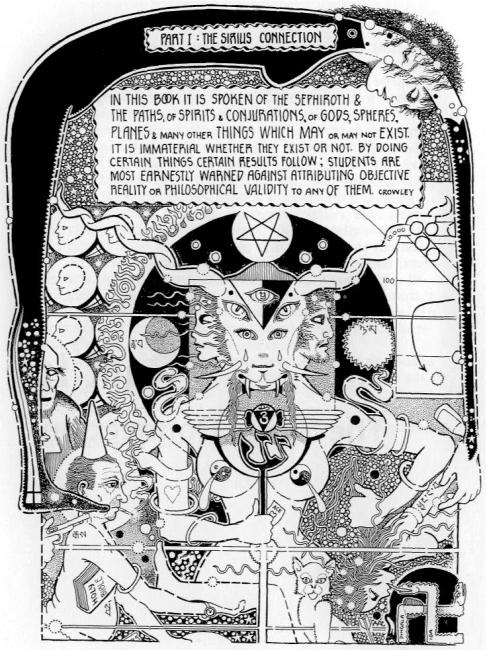
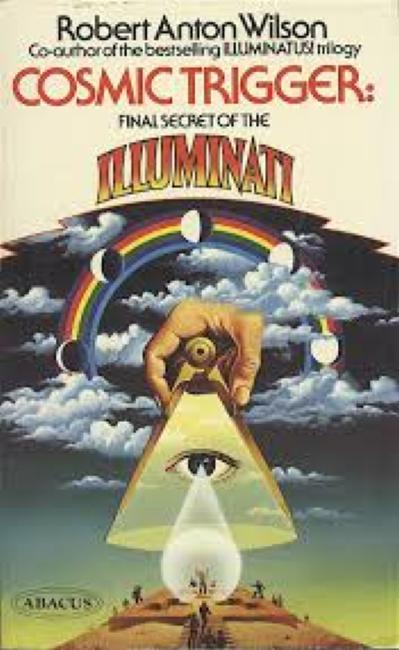
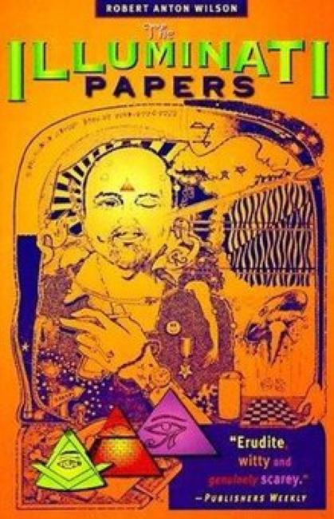
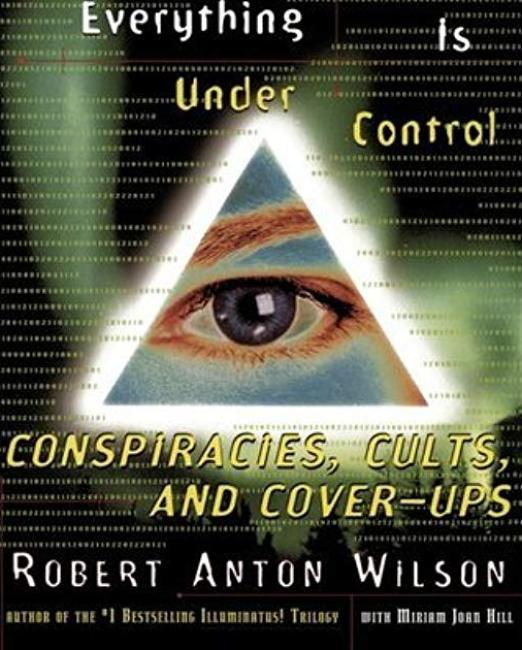
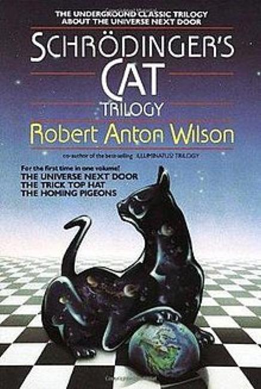
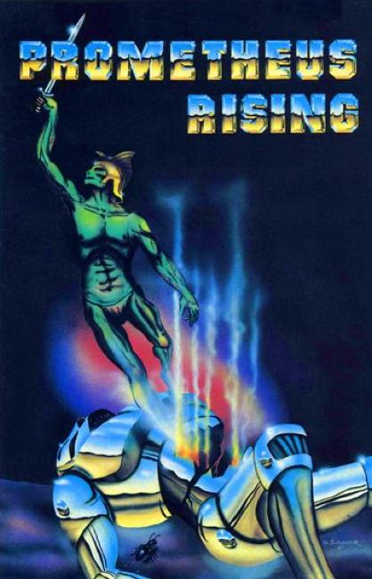
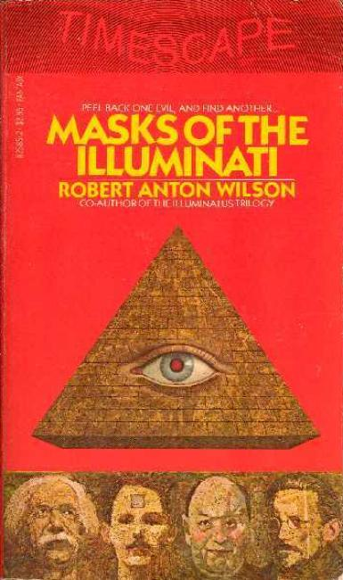
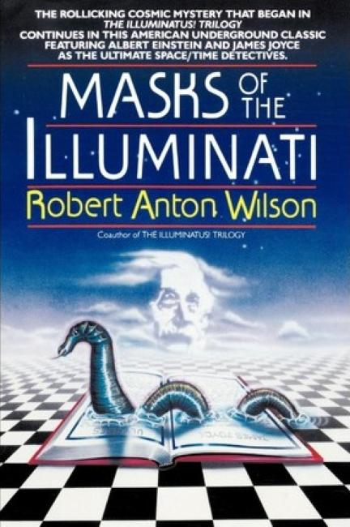
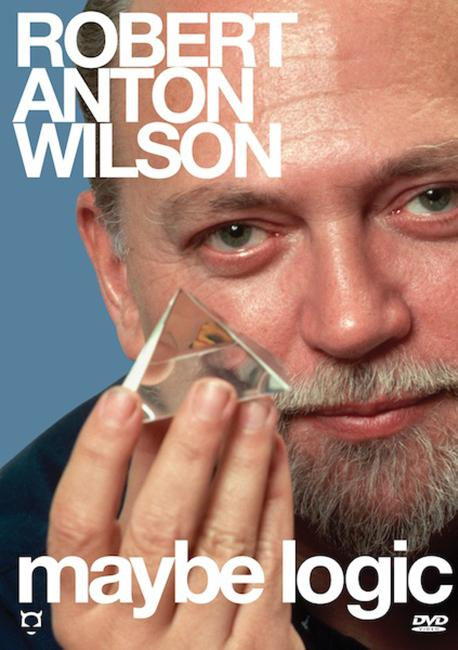
❮
❯
Robert Anton Wilson (January 18, 1932 – January 11, 2007) was an American author, novelist, essayist, editor, playwright, poet, futurist, and self-described agnostic mystic. Recognized by Discordianism as an Episkopos, Pope, and saint, Wilson helped publicize the group through his writings and interviews.
Wilson described his work as an "attempt to break down conditioned associations, to look at the world in a new way, with many models recognized as models or maps, and no one model elevated to the truth". His goal being "to try to get people into a state of generalized agnosticism, not agnosticism about God alone but agnosticism about everything."
Books
- Playboy's Book of Forbidden Words (1972)
- Sex and Drugs: A Journey Beyond Limits (1973)
- The Sex Magicians (1973)
- The Book of the Breast (1974)
- The Illuminatus! Trilogy (1975)
- The Eye in the Pyramid (1975)
- The Golden Apple (1975)
- Leviathan (1975)
- Cosmic Trigger Trilogy (1977)
- Cosmic Trigger I: The Final Secret of the Illuminati (1977)
- Neuropolitics (1978)
- Schrödinger's Cat Trilogy (1979)
- The Universe Next Door (1979)
- The Trick Top Hat (1979)
- The Homing Pigeons (1979)
- The Game of Life (1979)
- The Illuminati Papers (1980)
- Masks of the Illuminati (1981)
- The Historical Illuminatus Chronicles (1981)
- The Earth Will Shake (1982)
- Right Where You Are Sitting Now (1983)
- Prometheus Rising (1983)
- The Widow's Son (1985)
- The New Inquisition (1986)
- Natural Law, or Don't Put a Rubber on Your Willy (1987)
- Wilhelm Reich in Hell (1987)
- Nature's God (1988)
- Coincidance: A Head Test (1988)
- Revised as Neuropolitique (1988)
- Sex, Drugs and Magick: A Journey Beyond Limits (1988)
- Ishtar Rising (1989)
- Quantum Psychology (1990)
- Cosmic Trigger II: Down to Earth (1991)
- Reality Is What You Can Get Away With (1992)
- Cosmic Trigger III: My Life After Death (1995)
- The Walls Came Tumbling Down (1997)
- Everything Is Under Control: Conspiracies, Cults and Cover-ups (1998)
- TSOG: The Thing That Ate the Constitution (2002)
- Email To The Universe (2005)
- More Chaos and Beyond (2019)
Documentary
- Maybe Logic: The Lives and Ideas of Robert Anton Wilson, a documentary featuring selections from over 25 years of Wilson footage. (2006)